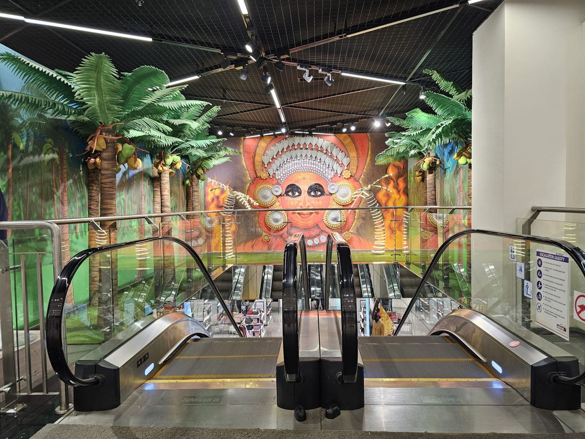

Om Bergsten Hiss
Gunnar Bergsten var montör hos en av de stora tillverkarna innan han startade eget i ett garage på Södermalm i Sundsvall 1958. Sonen Lars tog över 1987 och byggde upp moderniseringsavdelningen, och sedan 2019 är det Karin Bergsten som är vd.
Tredje generationen Bergsten servar, moderniserar och bygger hissar i stenstaden och resten av Mittsverige.
Gunnar Bergsten var montör hos en av de stora tillverkarna innan han startade eget i ett garage på Södermalm i Sundsvall 1958. Sonen Lars tog över 1987 och byggde upp moderniseringsavdelningen, och sedan 2019 är det Karin Bergsten som är vd.
Vi är 34 anställda, varav 21 tekniker i fält. Många av hissarna i stenstadens sekelskifteshus har vi skött i tre generationer, och i vårt lager på Bryggargatan finns reservdelar till fabrikat som tillverkarna slutade stödja på åttiotalet.

Sextioåtta år, samma efternamn på bilarna
Gunnar Bergsten var montör hos en av de stora tillverkarna innan han startade eget i ett garage på Södermalm i Sundsvall 1958. Sonen Lars tog över 1987 och byggde upp moderniseringsavdelningen, och sedan 2019 är det Karin Bergsten som är vd.
Berätta om er hiss
Fyll i formuläret så hör vi av oss inom en arbetsdag.
- Telefon
- 070-174 06 21
- E-post
- info@bergstenhiss.se
- Öppettider
- Kontoret mån–fre 7–16. Jour dygnet runt.
Kontakta oss
- Kontor
- Bryggargatan 7
852 34 Sundsvall - Telefon
- 070-174 06 21
- E-post
- info@bergstenhiss.se
- Öppettider
- Kontoret mån–fre 7–16. Jour dygnet runt.